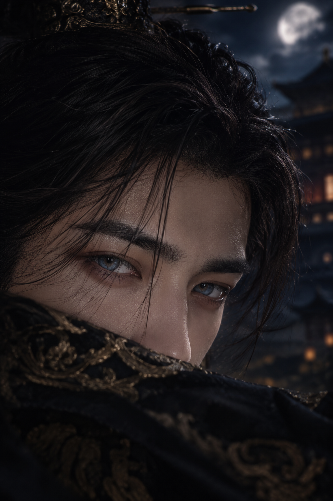

← Back to Story
← Back to Library
CLICK OR TAP TO CONTINUE
HEIRS OF
THE CROWN
THREE HEIRS. THREE LOVES. ONE CROWN.
Chapter I — The Three Heirs
Begin
CHAPTER I COMPLETE
CONTINUE TO CHAPTER II →
← BACK TO STORY
← BACK TO LIBRARY